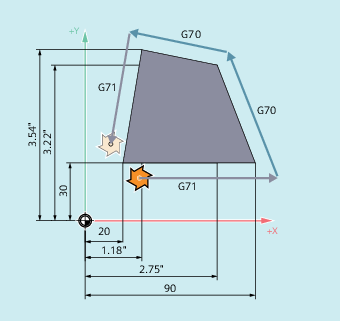

Mit den Befehlen der G-Gruppe 13 (Maßsystem inch/metrisch) kann innerhalb des Teileprogramms zwischen dem metrischen Maßsystem und dem Inch-Maßsystem umgeschaltet werden.
Damit die Befehle G700 und G710 zur Verfügung stehen, muss die erweiterte Maßsystem-Funktionalität eingeschaltet werden (MD10260 $MN_CONVERT_SCALING_SYSTEM = 1).
| Einschalten des Inch-Maßsystems Längenbehaftete geometrische Daten werden im Inch-Maßsystem gelesen und geschrieben. Längenbehaftete technologische Daten (z. B. Vorschübe, Werkzeugkorrekturen, einstellbare Nullpunktverschiebungen, Maschinendaten und Systemvariablen) werden im parametrierten Grundsystem gelesen und geschrieben. | |
G-Gruppe: | 13 | |
Grundstellung: | Einstellbar über MD20150 $MC_GCODE_RESET_VALUES | |
Wirksamkeit: | Modal | |
| Einschalten des metrischen Maßsystems Längenbehaftete geometrische Daten werden im metrischen Maßsystem gelesen und geschrieben. Längenbehaftete technologische Daten (z. B. Vorschübe, Werkzeugkorrekturen, einstellbare Nullpunktverschiebungen, Maschinendaten und Systemvariablen) werden im parametrierten Grundsystem gelesen und geschrieben. | |
G-Gruppe: | 13 | |
Grundstellung: | Einstellbar über MD20150 $MC_GCODE_RESET_VALUES | |
Wirksamkeit: | Modal | |
| Einschalten des Inch-Maßsystems Alle längenbehafteten geometrischen und technologischen Daten werden im Inch-Maßsystem gelesen und geschrieben. | |
G-Gruppe: | 13 | |
Grundstellung: | Einstellbar über MD20150 $MC_GCODE_RESET_VALUES | |
Wirksamkeit: | Modal | |
| Einschalten des metrischen Maßsystems Alle längenbehafteten geometrischen und technologischen Daten werden im metrischen Maßsystem gelesen und geschrieben. | |
G-Gruppe: | 13 | |
Grundstellung: | Einstellbar über MD20150 $MC_GCODE_RESET_VALUES | |
Wirksamkeit: | Modal | |
| Achtung |
Achsspezifische Daten von RundachsenAchsspezifische Daten von Rundachsen werden immer im parametrierten Grundsystem gelesen und geschrieben. |
Das Grundsystem ist metrisch (MD10240 $MN_SCALING_SYSTEM_IS_METRIC = 1). Die Werkstückzeichnung enthält jedoch Maßangaben in inch. Es wird deshalb innerhalb des Teileprogramms auf das Inch-Maßsystem umgeschaltet. Nach den inch-Maßangaben wird wieder zum metrischen Maßsystem gewechselt.
| Programmcode | Kommentar |
|---|---|
| N10 G0 G90 X20 Y30 Z2 S2000 M3 T1 | ; X=20 mm, Y=30 mm, Z=2 mm, F=Eilgang mm/min |
| N20 G1 Z-5 F500 | ; Z=-5 mm, F=500 mm/min |
| N30 X90 | ; X=90 mm |
| N40 G70 X2.75 Y3.22 | ; Programmiertes Maßsystem: inch |
| ; X=2.75 inch, Y=3.22 inch, F=500 mm/min | |
| N50 X1.18 Y3.54 | ; X=1.18 inch, Y=3.54 inch, F=500 mm/min |
| N60 G71 X20 Y30 | ; Programmiertes Maßsystem: metrisch |
| ; X=20 mm, Y=30 mm, F=500 mm/min | |
| N70 G0 Z2 | ; Z=2 mm, F=Eilgang mm/min |
| N80 M30 | ; Programmende |
Siehe auch:
Maßsystem inch/metrisch (G70/G71, G700/G710): Weitere Informationen